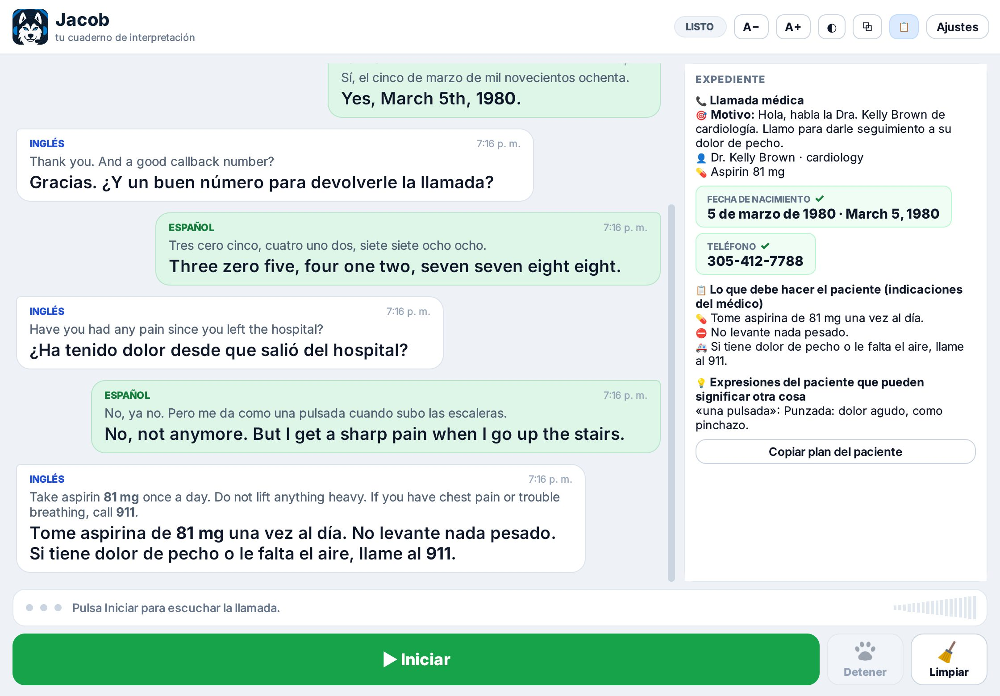

Lo que te pasa al teléfono, y lo que hace Jacob
No traduce por ti ni habla por ti. Te deja escrito lo que se dijo, para que tú interpretes sin pedir que repitan.
Te dictan un número a toda velocidad
Teléfonos, MRN, fechas de nacimiento, códigos postales y números de miembro quedan escritos en el formato correcto. Si lo repiten igual, Jacob lo marca como confirmado.
Te corrigen un dato a mitad de llamada
"No, es el 917-800…". Jacob compara el número nuevo con el anterior y te avisa que no coinciden, en vez de quedarse con el primero.
El paciente habla como se habla en su tierra
"Me lo zafé", "me da una pulsada", "bregar". Jacob te dice qué suele significar en Puerto Rico, México, Honduras, El Salvador o Venezuela.
El médico da todas las indicaciones al final
Medicamentos con dosis, lo que no debe hacer, cuándo ir a urgencias y la próxima cita quedan en una lista que puedes repasar y copiar.
Una pregunta se quedó sin contestar
Si nadie respondió, Jacob te la recuerda. Si ya la contestaron, no te molesta.
Llamada tras llamada, sin colgar Jacob
Cuando empieza otra llamada, Jacob limpia lo anotado y anota el motivo de la nueva. Si se equivocó, lo deshaces con un clic.
Te dejan en espera con música
Jacob reconoce la grabación de espera y no te descuenta horas mientras esperas.
Personas que hablan rápido o hacen pausas largas
Jacob aprende durante la llamada cómo habla cada persona, para no cortar frases a la mitad ni hacerte esperar de más.

Hecho para llamadas de interpretación
Un traductor en vivo te muestra palabras. Jacob entiende cómo es una llamada de intérprete.
| Jacob | Subtítulos o traductor en vivo | Libreta y memoria | |
|---|---|---|---|
| Muestra lo dicho y su traducción | Sí, en los dos idiomas | Sí | No |
| Anota números, fechas y nombres solos | Sí | No | A mano, mientras interpretas |
| Te avisa si corrigen un dato | Sí | No | Si lo alcanzas a notar |
| Modismos de cada país | Te explica qué pueden significar | Traducción literal | Depende de ti |
| Indicaciones del médico en una lista | Sí | No | A mano |
| Escucha solo la llamada, no tu micrófono | Sí | Depende de la herramienta | — |
| Cobro | Por horas de escucha, desde US$0,31/h | Gratis o suscripción, sin funciones de intérprete | Gratis, pero cansa |
Sí
- Oye solo la pestaña de Chrome donde está la llamada.
- Escribe y traduce inglés → español y español → inglés.
- Anota datos, motivo de la llamada e indicaciones del médico.
- Funciona en computadores sencillos (lo usamos en un Celeron con 4 GB).
- Se pausa solo si la llamada termina o nadie habla en 15 minutos.
No
- No interpreta por ti ni habla en la llamada.
- No usa tu micrófono ni graba tu voz.
- No guarda las conversaciones en tu computador.
- No funciona sin internet.
- Por ahora es solo para Windows con Chrome, y solo inglés ↔ español.
- No está certificado para HIPAA. Revisa las reglas de tu agencia.
Pagas por horas de escucha, no por minuto de llamada
Las horas se descuentan solo mientras Jacob escucha. En pausa, en espera con música o con Jacob cerrado, no se gastan.
- Todas las funciones
- Un computador por código
- Actualizaciones incluidas
- Todas las funciones
- Un computador por código
- Actualizaciones incluidas
Todo se hace por Telegram con @JACOB_MAIN: compra, renovación y soporte. El código se activa en el primer computador donde lo pegues.
Listo en unos 10 minutos
Una sola vez. No necesitas permisos de administrador.
- Descarga y abre el instaladorAbre
Jacob-Setup.execuando termine la descarga.Si Windows dice "Windows protegió su PC", pulsa Más información y luego Ejecutar de todos modos. Sale porque Jacob es un programa nuevo que aún no tiene firma de Microsoft. - Termina la instalaciónJacob queda en el escritorio y en el menú Inicio.
- Agrega la extensión a ChromeEscribe
chrome://extensions, activa Modo de desarrollador (arriba a la derecha), pulsa Cargar descomprimida y elige la carpeta de la extensión. La encuentras en el menú Inicio como "Jacob - carpeta de la extensión de Chrome". - Pega tu códigoAbre Jacob, entra en Ajustes y pega tu código (JACOB-XXXX-XXXX).
- Empieza la llamadaPulsa Iniciar en Jacob. En la pestaña de la llamada, pulsa el icono de Jacob en Chrome y luego Capturar esta pestaña.
Lo que suelen preguntar
¿Qué pasa con el audio de mis llamadas?
Jacob no guarda audio, texto ni traducciones en tu computador; al cerrarlo, lo anotado desaparece. Para transcribir y traducir, el audio de la pestaña viaja cifrado a nuestro servidor y a un servicio de transcripción en la nube. Nuestro servidor no guarda audio ni texto: solo tu código, tu computador y los minutos usados.
¿Funciona en mi computador?
Si tiene Windows 10 u 11 de 64 bits y Chrome, sí. Lo usamos todos los días en un portátil Celeron con 4 GB de RAM.
¿Cuánto tarda en aparecer la traducción?
Uno o dos segundos después de que la persona termina la frase.
¿Puedo usar mi código en dos computadores?
No. Cada código funciona en un solo computador, el primero donde lo pegues.
¿Se gastan horas si olvido pausar?
Jacob se pausa solo si Chrome deja de enviar audio por un minuto o si nadie habla en 15 minutos.
¿Y si algo no funciona?
Abre el menú Inicio, escribe %LOCALAPPDATA%\InterpreterCopilot\logs y pulsa Enter. Envía el archivo interpreter-copilot.log por Telegram a @JACOB_MAIN, con una línea de lo que pasó. Ese archivo no contiene la conversación.
Tú interpretas. Jacob toma nota.
Descárgalo gratis. Para usarlo necesitas un código de acceso: pídelo por Telegram a @JACOB_MAIN.
Descargar Jacob 3.1.2